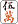

（45）千里眼なのか....
6/29、某紙の某コラム。
出る ドラ
東の１局５巡目の南家。ここでドースル。
ドースルたって、ポンして速攻でゆくか オトシを視野に入れて引きを狙うぐらい。たぶん回答は「東の１局だし、巡目も早い。をスルーしてじっくり構え、ビキを狙う」だろうと思ったら、基本的にはその通りだった。それはいいが、理由がふるっていた。
「このプレーヤー、前ゲームで３巡目にタンキでリーチしたことがあった。絶対の自信があったのに流局となった。誰かの暗刻持ちかと思ったら、なんと３枚とも山に眠っていた。（前ゲームの）他の局でも、そんな傾向があった。となればこの局でも、おそらくは山に深い。そこでポンで早テンしても、アガリは遅くなる。そんな手で動いて相手を刺激するよりは、ここは見送りで勝負を先送りする」だって。
千里眼じゃあるまいし....見送るのはいいとしても、そんなムチャクチャな理由があるか....